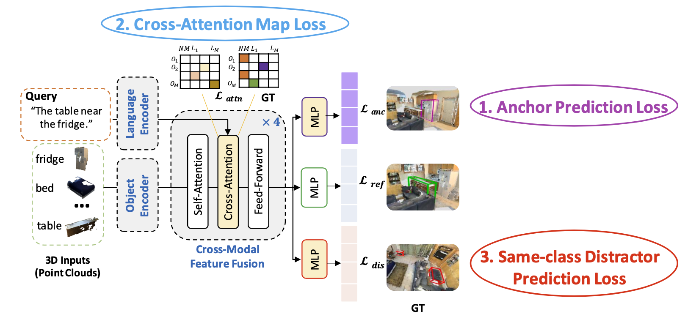
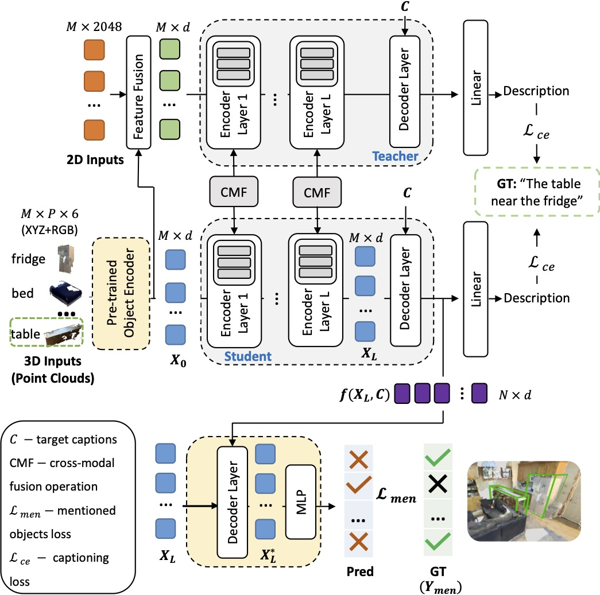

🔥 Method
We propose modifications to several existing state-of-the-art architectures to utilize the additional annotations
provided by ScanEnts3D during training.
We explore two tasks: neural listening and speaking and multiple architectures per task.
Our main goal is to demonstrate the inherent value of the curated annotations.
All proposed modifications are simple to implement and lead to substantial improvements.
We, therefore, conjecture that similar modifications are (or will be) possible to extant (and future) architectures making use of ScanEnts3D.
3D Grounded Language Comprehension

For the 3D Grounded Language Comprehension task, we propose three new loss functions, which are flexible, generic, and can serve as auxiliary add-ons to existing neural listeners.
The above figure demonstrates our proposed listening losses adjusted for the MVT model.
The proposed losses are applied independently on top of object-centric and context-aware features.
Crucially, the extended MVT-ScanEnts model can predict all anchor objects (shown in purple), same-class distractor objects (red), and the target (green).
The default model only predicts the target.
Grounded Language Production in 3D

For the Grounded Language Production in 3D task, we propose corresponding modifications and appropriate losses to two existing architectures:
“Show, Attend & Tell” Model and X-Trans2Cap. In the above figure, we propose the M2Cap-ScanEnts model adapting X-Trans2Cap model to operate with our proposed losses.
The model is given a set of 3D objects in a 3D scene and outputs a caption for the target object (e.g., the table in the green box).
The X-Trans2Cap model exploits cross-modal knowledge transfer (3D inputs together with their counterpart 2D images) and adopts a student-teacher paradigm.
Boxes in yellow show our modifications. Here, we use a transfer learning approach by finetuning a pre-trained object encoder trained on the listening task to promote discriminative object feature representations.
At the same time, our modular loss guides the network to predict all object instances mentioned in the ground truth caption.